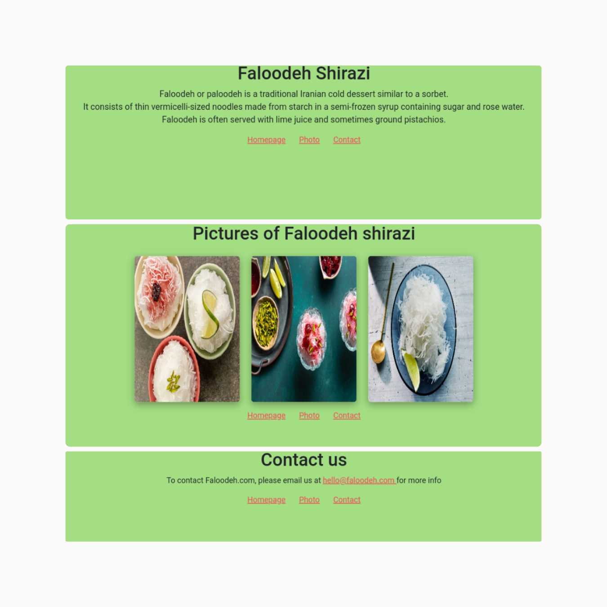

Portfolio Project
Used Bootstrap, media queries, HTML and CSS for building this website. Working with Bootstrap's JS and using navigation bar was my first experience in this project.
Learn moreFaloodeh Project
Faloodeh Shirazi's website was a personal practice to figure out how live server work. Used HTML and CSS for this multiple page website.
Learn more

Weather Project
Used API, Bootstrap, JavaScript, HTML and CSS for creating this web page. Hosting online and working with GitHub was my first experience that I developed in this project.
Learn more